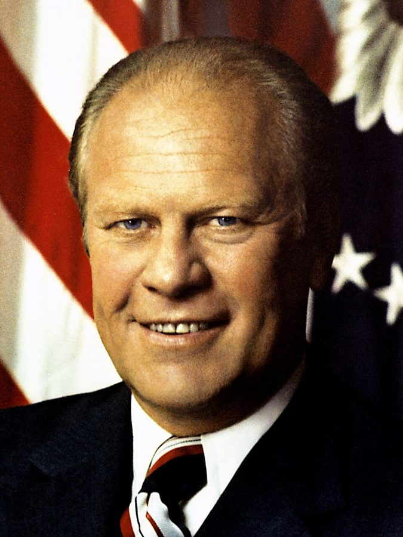
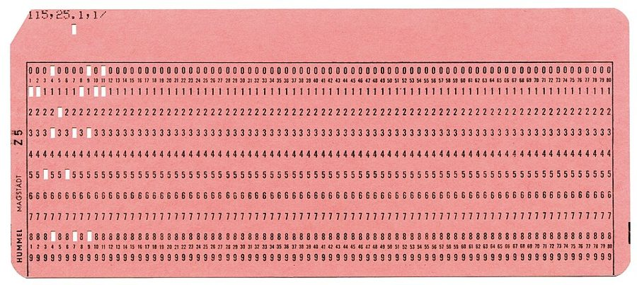
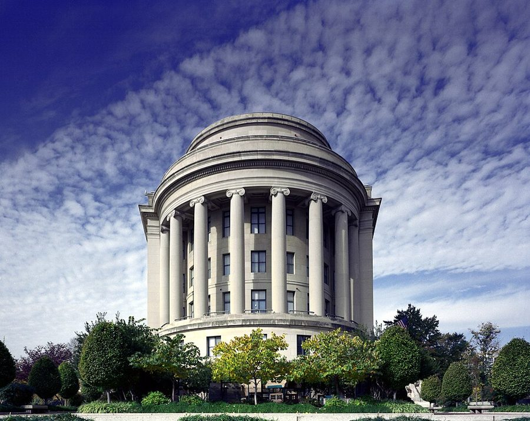

这一页在做什么
四十四到四十六岁。接着上一页：他已经搬出了家，离婚官司还没完。这两年他在洛杉矶教书，1976 年夏天去了斯坦福旁边的研究中心。二十三封信，四封是别人写来的。三类：给哈莱姆那个家的家信；一次联邦职位的提名，从答应到退出；关于校车、平权法案和智商的争论。
读的时候留意同一件事他对不同的人怎么讲。
1975 1976 1977
Venice 的小开间
Marina del Rey
Palo Alto
离婚判下来
提名悬着
家里人 Mrs. G 白宫 论战 朋友 学界
本站示意图。一个圆点是一封信，按信上的日期画；空心的是别人写来的。给 Nort 的那封没写日期，按它在书里的位置画在 1976 年 7 月。搬家和判决的月份书里只说了大概。1976 年 5 月到 7 月最密：提名、离开 UCLA、搬家挤在一起。
优胜美地（Yosemite）山谷。这一页的最后一封信讲的是他在这里多留了一天，为此把一次约会往后推。Diliff，CC BY-SA 3.0，维基共享资源
这一页的串场文字比前面几页长，有几段不是在交代信，是在讲信里没有的事：1976 年在亚特兰大一家餐馆拼桌的那个晚上，和他对去华盛顿出主意这件事的总评。这两段都是 2007 年的口气。
收信人和提到的人
这一页收信人多，一半只出现一次。有四封是别人写来的：Walter、Porter、Mrs. G、Riesman 各一封。家里人的关系先看图。
养母（Odyssey 里的 Mom）
Lacy
Birdie
Ruth
Tommy（他）
Birdie 的姐妹
养子
Jimmy
Ruth Ellen
1960 年去世
信里写成 Ruthellen
本站示意图，按这一页的信和串场文字画。蓝线是夫妻。给 Ruthellen 的信里说小时候有四个大人围着他一个，就是图上除了孩子以外的四位。他的亲姐姐 Mary Frances 属于另一个家，不在这张图上。
Birdie and Lacy 养母的女儿和女婿 · 住在纽约 这一页有五封，其中一封只写给 Birdie。离婚、白宫、提名、新认识的人，都是先向他们报。口气是晚辈对家里长辈，事情往简单里说。
Ruthellen Ruth Ellen · Birdie 和 Lacy 的女儿 已经成家，有自己的孩子。他在纽约和她聊过怎么带孩子，回来接着写了一封，讲自己小时候得到了什么。
Mrs. G Marie Gadsden · 一去一回，其中一封是她写来的 离婚判下来，他头一批报信的人里有她；去 Palo Alto 之前又写了一封。她的回信称呼是 Tom, My Dear，落款 Mrs. G 自己加了引号。
Walter Walter Williams · 经济学家 · 写来的 1970 年前后在洛杉矶认识的朋友。来信只印了两句，称呼是 Dear Tom。信后的串场讲的是 Walter 私下怎么花自己的时间和钱。
Professor Porter Kenneth Wiggins Porter · 俄勒冈大学荣休教授 · 写来的 1971 年两人通过信，那时 Porter 讲的是黑人学生抵制一位教师的事。这次寄来一份剪报，说情况在好转，并把功劳算给他的书。
Ms. Ravitch Diane Ravitch · 教育史学者 串场文字给了全名和身份。他写信给她谈校车接送。称呼用的 Ms. 是 70 年代刚通行的写法，不分已婚未婚。
Cutler、Mommsen、Seltzer、Knipps 各一封 · 书里只给了姓 Mr. Cutler：书里说是研究中心的主任，他写信接受聘请；中心自己公布的历任主任里没有这个姓，1975 年前后的主任是 O. Meredith Wilson 和 Gardner Lindzey。Professor Mommsen：外校学者，做过黑人和白人博士的薪水比较。Mr. Seltzer：一份刊物的编辑，登了批评他的文章。Miss Knipps：UCLA 的学生，交了一篇他教书以来见过的最好的学期论文。
Mr. ****** 白宫的一位幕僚 · 名字被隐去 经手他那次提名的联系人。写给这人的信只有一句话。本站不猜是谁。
Bernard Wharton School 的老朋友 60 年代那部分给过全名 Bernard Anderson，当年劝他留在学界。这次也劝过他别接提名，所以信里有一句 Despite your good advice。
Mr. President Gerald Ford · 美国总统 正式撤回提名要写给总统本人，所以有了这封两段的公文信。同一件事，两个月前他已经用一句话通知过白宫幕僚。
Professor Riesman David Riesman · 哈佛的社会学家 · 一来一回 上一页有过一封来信。这次来信读完了他 1972 年那本讲黑人教育的书，称他 Dr. Sowell；他回信称 Professor Riesman。两人谈到 Jensen。
Nort Norton · 哈佛时的室友 只印了一句，没有日期，是拿研究中心开的玩笑。
三个 Mary，两个 Ruth。 开头串场里来看他的 Mary Frances 是亲姐姐。最后一段串场里的 Mary 是 1976 年 9 月在 Palo Alto 认识的人，后来的妻子，她不是收信人。上一页那位 Dear Mary 是研究生时代的笔友，这一页没有她。Ruth 是 Birdie 的姐妹，Ruth Ellen 是 Birdie 的女儿。
没有名字的人。 my friend in Venice 是离婚期间的女友，书里始终不给名字；后面信里那位 a woman who is both “liberated” and clinging、串场里搬到亚特兰大的那位，都是她。开头串场里的 Gloria and her family，这个十年前面没有介绍过，书里没说是不是 60 年代那位学医的 Gloria。前妻 Jean 这一页只在第一封信里出现一次名字。只被提到的公众人物有 Kenneth Clark、Milton Friedman 和 Brimmer，见背景和词条。
信件地图
一条是一封信。斜体字是那封信正文开头的几个词，照这一版屏幕上的字抄的，在 Kindle 里搜它就能跳过去。编号是黄底的，是别人写来的信；这一页有四封。「留意」只给方向，答案在信里。
One of the few advantages 1975 年 2 月 22 日 · 写给 Birdie 和 Lacy 留意：先说坏消息还是好消息；随信寄了什么，给谁。Sometimes it is a very lonely 1975 年 3 月 3 日 · Walter Williams 写来 留意：our people 是谁；第二句的消息他是从哪听来的。Last Sunday, while I was 1975 年 4 月 30 日 · 写给 Birdie 留意：全信只有一件小事。他为什么单挑这件事告诉 Birdie。The enclosed clipping is a 1975 年 6 月 9 日 · Kenneth Wiggins Porter 写来 留意：引号里的话都是谁说的；Porter 自己是哪一边。My belated but warm thanks 1975 年 7 月 2 日 · 写给 Mr. Cutler 留意：答应的是哪一年的事；信后那句串场说这一年后来变成了什么。It's over! I am a 1975 年 9 月 4 日 · 写给 Mrs. G 留意：他拿哪两样东西的用量来量自己的心情；最后一段和谁同行。The assumptions behind the 1975 年 9 月 20 日 · 写给 Diane Ravitch 留意：加引号的词有哪几个；他说校车对不起的是谁。The other evening I was 1976 年 1 月 24 日 · 写给 Birdie 和 Lacy 留意：三段三件事。最后一段里，他为什么要他们别怕。If the Dutch could wear 1976 年 2 月 21 日 · 给系主任的便条 留意：没有称呼。他挖苦的是校方，还是同事。It so happens that I 1976 年 4 月 13 日 · 写给 Professor Mommsen 留意：62 美元是什么数；他向官员提了个什么建议；最后一句怎么读。The very authors who said 1976 年 5 月 5 日 · 写给 Mr. Seltzer 留意：他拿批评者自己的哪句话回敬；黑人吃的两头亏是哪两头。As a result of my discovery 1976 年 5 月 21 日 · 写给白宫幕僚 Mr. ****** 留意：全信一句。前面的长串场讲了他是怎么发现的。The enclosed paper is my 1976 年 5 月 21 日 · 写给 Bernard 留意：同一天写的第二封。前半谈一篇论文，后半把同一件事讲成笑话。I was a little surprised 1976 年 6 月 1 日 · 写给 Birdie 和 Lacy 留意：方括号里的 Mrs. G 对谁说了那句话；信后串场又添了谁。I do not recall ever 1976 年 6 月 21 日 · 写给 Miss Knipps 留意：给学生的临别赠言。最后一句拿哪两个词相比。The new address above is 1976 年 6 月 29 日 · 写给 Mrs. G 留意：他说自己要想清楚什么；哪两件事被他归成 madness。Your decision to withdraw came 1976 年 7 月 2 日 · Mrs. G 写来 留意：她对华盛顿的评价；她对 conservative 这个标签怎么看。The people at Stanford think 没写日期，约 1976 年夏 · 写给 Nort 留意：引号里是他的原话。信后那句串场说他实际上在哪干活。I have thought some more 1976 年 7 月 21 日 · 写给 Ruthellen 留意：他把自己的运气算成几倍；最后一句转到了谁身上。I am told that a 1976 年 7 月 25 日 · 写给福特总统 留意：和 5 月 21 日那一句比口气；第二段谢的是哪顿饭。Although you wrote me in 1976 年 8 月 10 日 · David Riesman 写来 留意：方括号是编书时加的；最后几句转述的是一位朋友的判断，不是 Riesman 自己的。It was very gratifying to 1976 年 9 月 2 日 · 写给 David Riesman 留意：他在 Douglass 校园里发生了什么；他的结论站在 Jensen 一边吗。The first time I went 1976 年 9 月 20 日 · 写给 Birdie 和 Lacy 留意：信里没有那位女士的名字。名字在哪出现的。
背景：作者默认你知道的事
福特的白宫

Gerald Ford 的官方肖像。David Hume Kennerly，公有领域，维基共享资源 1974 年 8 月尼克松因水门事件辞职，副总统福特接任，1976 年 11 月的大选输给民主党的 Jimmy Carter。串场文字说，福特任内他去过三次白宫。这一页的信里有两次：1975 年 2 月的午餐，和一次讨论校车的午餐。
波士顿的校车
busing 的来历，Odyssey 第 10 章（下）的伴读讲过。信里说的是波士顿：1974 年 6 月，联邦法官 W. Arthur Garrity 判定当地学校委员会有意维持种族隔离，下令用校车跨区接送学生。9 月开学，白人工人区 South Boston 有人朝载着黑人学生的校车扔石头。
支持的一方认为，隔离的学校本身就不平等。他反对的理由在给 Ravitch 的信里。
大学里的族裔登记

IBM 标准的 80 列打孔卡。这一张卡边印着德国厂商的名字，与本书无关。信里说的 IBM cards 就是这种卡片：一人一张，填好交回去由机器统计。Harke，CC BY-SA 3.0，维基共享资源 1965 年的一道行政命令要求拿联邦合同的机构不得歧视。70 年代初的细则更进一步，要它们统计雇员的族裔，订出目标和时间表。大学拿联邦经费，也在内，由卫生、教育和福利部（信里的 H.E.W.）监督。UCLA 发卡片让教师自报族裔，就是为了交这份数。
联邦贸易委员会的提名

华盛顿的联邦贸易委员会大楼。Carol M. Highsmith，公有领域，维基共享资源 Federal Trade Commission（FTC）是管反垄断和消费者保护的独立机构，五位委员由总统提名、参议院确认。确认的机制 Odyssey 第 10 章（上）的伴读讲过。白宫 1976 年 4 月 6 日把他的提名送到参议院；那年是大选年，参议院由民主党控制。白宫 7 月 20 日的新闻稿已宣布准备撤回这项提名，书里他写给总统的那封正式信署的是 7 月 25 日，晚了五天。这件事在这一页里占了六封信，每封的口气都不一样。
哪天，对谁
怎么说的
1 月 24 日 给 Birdie 和 Lacy
先推了，又被劝回来。 有人上门调查，别怕
5 月 21 日 给白宫幕僚
一句话：发现自己被严重误导， 不再当这个被提名人
5 月 21 日 给 Bernard
当笑话讲：去委员会的路上 出了件怪事
6 月 1 日 给 Birdie 和 Lacy
听说你们早有疑虑，我很高兴。 转述 Mrs. G 对调查员说的话
7 月 2 日 Mrs. G 写来
一点不意外。那个位子不适合你， 研究中心才是你待的地方
7 月 25 日 给福特总统
公文：请把这封信当作撤回请求。 顺带谢一顿午饭
本站示意图，右边一栏是本站的概括，不是原话。蓝底的是他写的，灰底的是写给他的。事情的经过不在信里，在 5 月 21 日那封信前面的两段串场里。
Jensen、Riesman 和七万份记录
心理学家 Arthur Jensen 1969 年发表长文，认为黑人和白人的智商测验平均分之差有相当一部分来自遗传，引起激烈争论，上一页已经出现过。David Riesman 是哈佛的社会学家，上一页的串场提过他的名著 The Lonely Crowd （1950）。
他给 Riesman 的回信里，写了自己在 Urban Institute 那个项目得出的结论。
Jensen 分数差有一部分 来自遗传
批评 Jensen 的人 分数差来自黑人 独有的处境
他说：两边都在给一件 「黑人独有」的事找解释
他自己 别的族群半个世纪前 分数相近；地位升了， 分数也升
所以没多少「独有」 的事需要解释
本站示意图，三栏都是按他信里的说法画的，左边两栏是他对别人立场的概括。信里说项目收了十二个族群、几十年间的七万份智商记录。这份研究公开发表是 1977 年的事，在下一页。
Center for Advanced Study
全名 Center for Advanced Study in the Behavioral Sciences，1954 年由福特基金会出资设立，在斯坦福大学旁边的山坡上。每年请几十位学者来住一年，不用上课，各写各的东西。Odyssey 第 10 章（下）的伴读讲过它和胡佛研究所的分别。
他在这里动笔的那本书，1980 年出版，书名是 Knowledge and Decisions 。
Odyssey 里讲过这一段
这两年在回忆录的第 10 章前半。回忆录引过这一页里的一封信：给白宫幕僚的那一句话。
离婚 Odyssey 第 10 章（上） 回忆录讲的是搬出来那天买的啤酒和阿司匹林、每周两次接孩子、听证前夜决定不争监护权。信里是当时的话：2 月还说要争；9 月向 Mrs. G 报喜，临走亲了旧公寓的门。回忆录提到哥哥 Charles 因心脏病去世，信里那句 my brother died 说的应是同一件事。
去那一页 → 白宫的午餐和那次提名 Odyssey 第 10 章（上） 午餐，回忆录写他迟到、福特怎么打招呼，说同桌是另外六位左右；信里说一共八个人上下，还寄了座位卡。提名，回忆录有完整的对话和过程；这里是他当时对几个人的几种说法，多出 Mrs. G 的那句话、Friedman 没肯帮白宫劝他、给总统的正式信。那张便条两本书只差一个介词。
去那一页 → Yosemite 和 Mary Odyssey 第 10 章（上） 回忆录给了更多：她是 Palo Alto 的律师，因为他在《纽约时报》上的文章找朋友议论他，1976 年 9 月 8 日三个人吃了午饭。信里对 Birdie 和 Lacy 只说是个很有意思的女人，重点是她主动提出改期。回忆录还说他同时拿到了胡佛研究所的邀请，这本书没提。
去那一页 → Jimmy 的照片，Venice 的朋友，Riesman 回忆录没写 洗出 1951 年那张合影时他哭了；给 Ruthellen 算自己小时候多得了几倍的照看；离婚期间的那位女友；和 Riesman 谈学界、谈智商的通信；重访 Douglass 校园。这些回忆录第 10 章都没有。Jimmy 小时候的事在回忆录第 2、3 章。
这一版的错字
只收会让人读不懂、或者在 Kindle 里搜不到的。第一格是屏幕上的字，照抄的；第二格是本站有把握的原字。问号前多出来的撇号全书都有，见「开读之前」，这里不列。
屏幕上的字 应为 在哪 Edward l3anfield Edward Banfield 白宫午餐那封信后面的串场。搜 Banfield 搜不到 his eliorts to help his efforts to help Walter 来信后面的串场 -a hook about the ways a book about the ways Porter 来信后面的串场，讲他想写的新书。b 认成了 h 1976-77. 1 accept your offer I accept your offer 给 Mr. Cutler 的信。大写的 I 认成了数字 1 they had otlered me they had offered me 讲提名拖着不办的那段长串场 After a hitter divorce After a bitter divorce 同一段的末尾 Brimmer, et.ul., to get Brimmer, et al., to get 1976 年 5 月给 Bernard 的信：Brimmer 等人 a lot of gridt a lot of grief 6 月给 Birdie 和 Lacy 的信后面的串场，讲 Friedman 的那句 from Stanfiord University from Stanford University 给 Miss Knipps 的信后面的串场 Mrs. G was hone in Washington was home in Washington Mrs. G 回信前面的那句串场 ludicrous for vou ludicrous for you Mrs. G 的回信 World War I1 World War II 给总统的信后面的串场，讲那句旧口号的地方 sometimes lower) lQs sometimes lower) IQs 给 Riesman 的回信。大写的 I 认成了小写的 l，搜 IQs 搜不到这一处 I1er name was Mary Her name was Mary 这一页的最后一句串场
破折号有的整个掉了。 除了印成短横，这一页还有几处破折号直接没了，句子像是少了标点：Jimmy the son of Birdie and Lacy-taken in 1951 （Jimmy 后面该有一个）、the worst of both worlds black progress （worlds 后面该有一个）。讲波士顿那段串场末尾，the year before. 后面多了一个引号，不是脚注号，忽略即可。这一页没有做成图片的脚注或信头。
词与短语
按信的顺序排，串场文字里的词条归到它后面那封信的组里。斜体小字是那句话里的几个词，照这一版屏幕上的字抄的（撇号是直的），在 Kindle 里搜它就能跳到那一句。单个的生词长按就能查，这里收的主要是词典帮不上忙的。
1975 年 2 月 · 给 Birdie 和 Lacy
brood
… less time to brood. There was …
一个人闷着想心事
本义是母鸡孵蛋。
small grants
… gotten a couple of small grants to …
小额研究经费
两笔，各做一项研究：办得好的黑人学校，平权法案。这一页后面的论战都从这两项来。
monograph
… to write a monograph on affirmative action. …
专题论著
比论文长、比书短的单篇研究。这一本 1975 年出版，题为 Affirmative Action Reconsidered 。
puffing students
… trailing behind me some puffing students. …
气喘吁吁的学生
四十四岁的教授爬八层楼，身后跟着喘气的年轻人。小小的得意。
custody action
… the divorce and custody action. The …
争监护权的官司
action 在法律上是诉讼。custody 是子女的监护权。
asylum
… she is in an asylum or in …
精神病院
旧说法，现在不这么叫了。这句是在讲当时法院的惯例：除非母亲进了精神病院或监狱，孩子不会判给父亲。
It so happened that
… It so happened that I was seated …
碰巧
往轻里说的开头：我正好被排在总统旁边。给 Mommsen 的信用差不多的几个词开头。
the Presidential seal
… card with the Presidential seal was used …
总统徽章
seal 是印章、徽记。那张 card 是宴席上标座位的名卡，他寄回家给孩子当纪念。
1975 年 3–6 月 · Walter 和 Porter 的来信，给 Birdie
a bulletin from a war front
… like a bulletin from a war front. …
前线发回的战报
串场文字的比方。Walter 的信短，消息坏，口气像报告敌情。
all but written
… has an all but written policy of …
只差没写成文字的
all but = 几乎。一条不成文、但人人照办的规矩。医院的名字被星号盖住了。
flunk
… prohibiting the flunking of black medical …
判不及格
美国校园口语。这是 Walter 转述的传闻，他自己说来源可靠，书里没有别的佐证。
signs of the times
… of the signs of the times but …
时代的征兆
出自《马太福音》第 16 章。他在这本书里反复用这几个词，说的几乎都是坏兆头。
functionally illiterate
… if the functionally illiterate black students in …
功能性文盲
认得字，但读写不够应付功课和日常。
Those were the days
… Those were the days, too, when …
那年头啊
平常是怀旧的话。Porter 是反着用：那是最糟的年头。
talk good ghetto English
… talk good ghetto English and that …
说一口地道的贫民区英语
Porter 转述某些白人教师对黑人学生说的话。talk good 本身就不合语法，是照着那种腔调学的。
gave was usually the word
… and gave was usually the word …
当时人们用的就是「给」这个字
分数说成老师「给」的，不是学生挣的。Porter 在挑这个动词的毛病。
turn over in his grave
… have turned over in his grave-even as …
气得在坟里翻身
W. E. B. Du Bois 是黑人学者，主张黑人要受高水平的教育，1963 年死在加纳。所以说「哪怕远在加纳」。
1975 年 7 月 · 给 Mr. Cutler
fellowship
… California for a fellowship to spend a …
研究员的名额和资助
和友谊无关。拿到的人叫 Fellow。
My belated but warm thanks
… My belated but warm thanks for your …
迟到的、但是由衷的感谢
书信套话：回晚了，先赔个不是。给 Riesman 的信末尾还有一句 My warm thanks 。
alimony and child support
… less alimony and child support than I …
赡养费和子女抚养费
alimony 付给前配偶，child support 是给孩子的。
Sir Galahad
… if he were Sir Galahad rescuing the …
加拉哈德爵士
亚瑟王的圆桌骑士里最纯洁的一位。后面的 damsel in distress （落难的少女）是骑士故事的套路。说的是对方的律师。
an instant dose of reality
… getting an instant dose of reality I …
当场吃了一剂现实
dose 是一剂药。骑士救下的人转过头来骂他。
1975 年 9 月 · 给 Mrs. G
no-fault state
… divorce in a no-fault state with terminal …
实行无过错离婚的州
不必证明哪一方有错就能离。加州 1970 年起实行，是全美第一个。uncontested 是对方不反对离。
terminal alimony
… with terminal alimony is still an …
有期限的赡养费
terminal 这里是「到期终止的」，不是绝症。三个条件都算轻的，他的意思是：就这样还是脱了一层皮。
what a lovely phrase
… wife (what a lovely phrase) made everything …
多好听的说法
好听的是 former 这个词。半是挖苦，半是真高兴。
come through it in better shape
… have come through it in better shape …
挺过来了，情况比……好
in good shape = 状况不错。
a few bars
… and sang a few bars of …
几小节
bar 是乐谱上的小节。临走亲了门，哼了几句歌。
enlarger
… to buy an enlarger that I …
放大机
暗房里把底片投到相纸上的机器。1976 年 1 月，他用它洗出了 Jimmy 的照片。
anti-social to travel alone
… it would be anti-social to travel alone. …
一个人旅行就太不合群了
往轻里说：有女伴同行。对老师不明说，用一句玩笑带过。
1975 年 9 月 · 给 Ms. Ravitch
court-ordered busing
… wrong with the court-ordered busing of black …
法院下令的校车接送
见背景。bus 当动词用。
crusades
… “integration” and “busing” crusades would not …
十字军式的运动
说一场运动是 crusade，是说它凭的是热情和道德感。两个加引号的词是不认那叫融合。
stand up under
… would not stand up under a half-hour …
经得住
后面接 scrutiny（细查）。
Logic I
… of scrutiny in Logic I. The …
逻辑学的入门课
I 是罗马数字一，课程编号。意思是连大一的课都过不了。下一页他又用了一次。
dangerous idiots
… town and through dangerous idiots, in the …
危险的蠢货
指 South Boston 街上朝校车扔东西的人群。
1976 年 1 月 · 给 Birdie 和 Lacy
upscale complex
… in an upscale complex in Marina …
高档的公寓小区
complex 作名词：成片的建筑群。
negative file
… looking through my negative file, and decided …
存底片的夹子
negative 是底片。
emerging in the chemicals
… the picture emerging in the chemicals-but I …
在药水里慢慢显出来
相纸泡进显影液，影像一点点浮现。chemicals 是暗房的药水。
open up
… were beginning to open up for black …
（机会）放开
things 指各行各业的门。他说自己赶上了两头：机会开始有了，贫民区还没坏到后来那样。
fancy-sounding talk
… to a lot of fancy-sounding talk. …
听着漂亮的空话
他对自己孩子的两个担心：被惯坏，或者被漂亮话哄走。
clear
… Revenue Service will have to clear me. …
审查后放行
熟词生义。安全审查叫 clearance 。Internal Revenue Service 是国税局。
1976 年 2 月 · 给系主任的便条
check “Other”
… I checked “Other” and, in the …
在「其他」那一栏打勾
check 是打勾。然后在空格里填了 Nonracist。
the powers that be
… challenge the campus powers that be. I …
当权的那些人
出自英王钦定本《罗马书》第 13 章，be 是古体，不能改成 are。
racial-ethnic census
… cooperate with the racial-ethnic census under …
种族和族裔的普查
census 本指全国人口普查，这里是夸大的叫法。见背景。
IBM cards
… keep sending IBM cards to those …
打孔卡
见背景的照片。
We all have wastebaskets
… We all have wastebaskets. …
咱们谁没有废纸篓
全信的落点。不说「别理它」，说东西该往哪扔。
cave in
… how readily professors cave in to the …
屈服
本义是塌方。这句是 2007 年的话：终身教职本该让人敢说话。
1976 年 4–5 月 · 给 Mommsen 和 Seltzer
twit
… I twitted them about the $62 …
拿……取笑
旧式的动词，和推特无关。
what their program was all about
… what their program was all about! I …
他们那个计划图的就是这个
what X is all about = X 的全部意义。问的是：兴师动众，就为一年 62 块？
not well received
… My comments were not well received. …
反应不佳
往轻里说。他当着官员的面要他们现在就付现金，对方的脸色可想而知。
mere facts
… give in to mere facts. Critics …
区区事实
反话。mere 是学对方的口气：事实算什么。
pre-quota
… blacks' own pre-quota achievements account for …
配额之前的
他把 goals、quotas、affirmative action 三个词并排加了引号，当成一回事。主张平权法案的人不同意这样画等号。
the worst of both worlds
… had the worst of both worlds black …
两头的亏都吃了
反用 the best of both worlds （两全其美）。worlds 后面掉了一个破折号。
lift oneself by the bootstraps
… of lifting oneself by the bootstraps but …
全靠自己往上挣
bootstrap 是靴子后面的提带，拽着它把自己提起来。程序员说的 bootstrap、boot 是同一个来历。
something for nothing
… as receiving something for nothing. A …
白拿
他说的第二头亏：自己挣来的，被旁人当成送的。
de-legitimate
… little more than de-legitimate what people …
让……显得名不正言不顺
现在多写作 delegitimize 。这句见「值得停下来的句子」。
1976 年 5 月 · 退出提名：给白宫幕僚，给 Bernard
conflicts of interest
… raise questions about conflicts of interest with …
利益冲突
候任的委员不能收可能归他管的公司的钱，所以演讲和咨询都得推掉。
as what
… And, if so, as what'? After …
以什么身份
Venice 那位朋友的问题：跟你去华盛顿，算你的什么人？问的是结不结婚。
a few choice words
… him a few choice words and walked …
几句难听的话
choice 本是「精选的」，这个短语里专指骂人的话。
hotel stationery
… note to him on hotel stationery. …
旅馆的信笺
stationery 是文具、信纸；stationary 是静止的。
grossly misled
… I had been grossly misled about my …
被严重误导
不说 lied to。书面上留了一步，意思是一样的。
couldn't care less
… people who couldn't care less about the …
压根不在乎
字面是「不可能更不在乎了」。
flesh-and-blood
… at the inspiring flesh-and-blood results before my …
活生生的
结果不是表格里的数，是教室里的孩子。
a funny thing happened to me on my way to
… funny thing happened to me on my …
去……的路上出了件怪事
Adlai Stevenson 1952 年竞选总统落败后的自嘲，原话的目的地是白宫。他把目的地换成了联邦贸易委员会。
shilly-shallying and soft soap
… months of shilly-shallying and soft soap, until …
推三阻四，外加灌迷魂汤
shilly-shally 是拿不定主意、拖着；soft soap 是哄人的好话。
on the hill
… White House and on the hill. The …
在国会
Capitol Hill，国会山。通常大写。
less than candid
… staffer had been less than candid, and …
不够坦率
意思是撒了谎。紧接的 less than diplomatic 是自己很不客气。两个往轻里说对称着用。
1976 年 6 月 · 给 Birdie 和 Lacy，给 Miss Knipps
talk me out of
… people to talk me out of my …
劝得我放弃了
放弃的是「拒绝」，所以结果是答应了。
polarize
… the effect of polarizing students against one …
使分成对立的两派
他数了四处：Douglass、Howard、UCLA 的课堂，和 Urban Institute 的项目。
human capital
… become part of your human capital. Above …
人力资本
经济学的说法：一个人身上的知识、技能和阅历。经济学教授的祝福：走的弯路也算资产。
cul-de-sac
… in the intellectual cul-de-sac of a clique …
死胡同
法语来的词。clique 是小圈子。
a ringing word
… is a ringing word, but truth …
响亮的字眼
说的是 Commitment。这个词当时是校园里的褒义词：投身一项事业。
1976 年 6–7 月 · 和 Mrs. G 一去一回，给 Nort
take leave of
… I took leave of UCLA and …
告别
他同时也是向学校请了假（on leave）走的，教职还留着。
in anticipation
… address above is somewhat in anticipation. Next …
提前写上的
信头的地址是下周才搬去的新址。地址这一版没印。
wind up
… I am also winding up a relationship …
了结
像结束一桩生意那样收尾。
“liberated” and clinging
… who is both “liberated” and clinging-the world's …
又「解放」又黏人
liberated 是 70 年代妇女解放运动的用词，他加了引号。这是他单方面的评语。
a light touch
… to add a light touch to life. …
一点轻松的调剂
主语是 Unpredictable madness ：报纸约他写「黑人保守派」，电视喜剧请他当顾问。
Keep the faith
… Keep the faith. I am happy …
坚持住
当年常用的道别话。他接了一句：我能保住神志就知足了。
well served
… you would be well served as a …
对你有好处
Mrs. G 的话绕了一道：我从不相信那个位子对你好。
impel me to react
… about “conservative” impel me to react! I …
逼得我非说两句不可
她的回应是：这个标签加不加引号，都不合你。
“gruelling” work
… I tell them it is “gruelling” work: …
「累死人的」活
反话。斯坦福的人以为他们成天打排球，他顺着说：对，整天净是深刻的思想。
Collective creativity
… Collective creativity never struck me as …
集体创造
研究中心的用意是让学者凑在一起互相启发。他不信这个，多半在自己的公寓里写。
1976 年 7 月 · 给 Ruthellen，给福特总统
lynch
… could have been lynched just for being …
被私刑处死
南方白人暴民不经审判杀害黑人。这段串场拿 1952 年和 1976 年的亚特兰大相比。
run her names together
… I always ran her names together when …
把两个名字连着写
所以称呼是 Ruthellen，不是 Ruth Ellen。
adult input
… five times the adult input of most …
大人花在孩子身上的工夫
input 是经济学里的「投入」。他在用算账的办法讲自己的童年。
have one's hands full
… Birdie had her hands full with two …
忙得腾不出手
the benefit of their best
… had the benefit of their best, and …
赶上了他们最好的年月
下半句是对 Ruthellen 说的：也许比他们自己的孩子，也就是你，还走运。
I am told that
… I am told that a Presidential nominee …
据告知
公文口气。不说谁告诉的。
take this opportunity to
… me also take this opportunity to thank …
借此机会
书信套话。
become unhinged
… some people became unhinged at the thought …
气急败坏
hinge 是门的铰链，脱了铰链就是失了常态。前面的 my sinister influence 是反话：他刚说过自己毫无影响。
go ballistic
… When Kenneth Clark went ballistic over that …
暴跳如雷
口语，像导弹一样炸了。Kenneth Clark 是心理学家，上一页出现过；这段评语是他单方面的。
state dinners
… to White House state dinners, though I …
国宴
state 是国家，不是州。
Is this trip necessary?
… recall the old slogan from the days …
这趟门非出不可吗？
二战时美国政府劝民众少出远门、把车票和汽油省给军用的口号。他拿来挡华盛顿的邀请。
1976 年 8–9 月 · Riesman 的来信和回信
a one-person Gideon Society
… myself a one-person Gideon Society for it. …
一个人的基甸会
基甸会是在旅馆客房里放《圣经》的团体。Riesman 的意思：我要到处替你这本书传道。
peer group
… families and among the peer group, and …
同龄人的圈子
社会学的行话。前面的 enemies 指那些拦着他读书的人。
COSEP
… beginning of the COSEP program that all …
康奈尔招收少数族裔学生的专项计划
他在康奈尔时的事，Odyssey 第 8 章讲过。Perkins 是当时的校长，方括号是编书时加的。
creeping Jensenism
… and who spoke about “creeping Jensenism” among …
悄悄蔓延的 Jensen 主义
creeping 加在主义前面，是说它不声不响地扩散。说这话的是 Riesman 的一位黑人朋友，说的是黑人自己当中的事。
alibis
… many of the alibis blacks once had …
开脱的理由
本义是不在场证明，口语里是借口。这是那位朋友的判断，Riesman 只是转述。
in a hustler way
… only in a hustler way, there …
靠混世的门道
hustler 是街头靠小聪明和偏门捞钱的人。
there must be something to
… there really must be something to Jensen. …
……看来确有几分道理
there is something to it = 这说法不是全无根据。
in one sitting
… read your reprint in one sitting, in …
坐下来一口气
reprint 是论文的抽印本，学者之间互相寄。
prod my conscience
… among blacks prodded my conscience to get …
戳了一下我的良心
数据在手里压了两年没发表。
the Polish “joke” fad
… despite the Polish “joke” fad. In …
拿波兰裔开涮的那阵风
当时美国流行把波兰裔说成笨人的笑话。他的数据里，波兰裔的平均分几十年间升了约 30 分。
go counter to
… my conclusions go counter to both Jensen …
和……相反
both 后面是两方：Jensen，和批评 Jensen 的人。
little that needs explaining
… is little that needs explaining.... …
没多少需要解释的
little 不带 a，是否定。见背景的图。
would that
… mentioning my book; would that my publisher …
但愿
古雅的虚拟语气，等于 I wish 。抱怨出版社不替他宣传，用文绉绉的话说出来是玩笑。
1976 年 9 月 · 给 Birdie 和 Lacy
jinxed
… to think I was jinxed, especially since …
交了霉运
去了两次，两次都连下两天雨。
the opposite experience
… after having had the opposite experience. …
相反的经历
往轻里说，指前一段婚姻。对 Birdie 和 Lacy 不必点名。
a name that I would be speaking
… that I would be speaking for many …
一个我后来叫了很多年的名字
2007 年的话。绕着说：她后来成了他的妻子。
值得停下来的句子
“Commitment” is a ringing word, but truth is a better guide.— 1976 年 6 月 21 日给 Miss Knipps 的信。本站译：「投身」是个响亮的字眼，但拿事实当向导更可靠。
句子很短，两半用 but 对着：一个 word，一个 guide。前一句他劝这位学生别困在小圈子或成见里，证据多了就改道，改多少次都行。这是书里他离开 UCLA 之前的最后一封信，八天后他告诉 Mrs. G，不知道自己还想不想再教书。
1962 年他对 Cy 说过，「听着有道理」是最靠不住的向导。十四年后还是 guide 这个词，这次是对一个学生说的。
A program which does little more than de-legitimate what people have achieved on their own is worse than useless.— 1976 年 5 月 5 日给 Mr. Seltzer 的信。本站译：一项计划做的事，不过是让人们凭自己挣来的东西显得名不正言不顺，那它比没用还糟。
拆开看：主语是 A program ，一直到 on their own 都是它的定语，谓语只有最后四个词。does little more than 是「除了……几乎没干别的」。
这是他反对平权法案的一条理由，后来的书里一再出现：他认为黑人收入的上升发生在配额之前，配额没带来多少，却让旁人把已有的成绩看成照顾的结果。批评他的人认为这项政策带来了实在的好处，信的开头引了他们的话。
检查一下理解
先在心里答，再点开。答错的那题，回书里把那封信再读一遍。
1. 1975 年 3 月那封只有两句的信，开头说帮助 our people 是孤独的事。这是他写的吗？ 不是。称呼是 Dear Tom，是 Walter Williams 写给他的。our people 指黑人同胞，两人都在里面。信后那段讲 Walter 私下出钱出力帮人的话，是他 2007 年补的。
2. 给 Mrs. G 报告离婚的那封信，最后说一个人旅行 anti-social。他是在检讨自己不合群吗？ 不是，这是玩笑。他正沿着加州海岸慢慢往北开，意思是身边有女伴。对老师不直说，用一句俏皮话带过。
3. 1976 年 1 月他告诉 Birdie 和 Lacy：要是有政府的人来找你们，别怕。出了什么事？ 没出事。他先谢绝了联邦贸易委员会的提名，白宫托人来劝，他改了主意。正式提名之前联邦调查局和国税局要审查他，会去问亲友。他要家里人照实说。
4. 给系主任的便条提到纳粹占领时期。他是在说 UCLA 的校方像纳粹吗？ 重点不在校方。他拿占领下的人作比：照他的说法，那些人冒的是真危险，有终身教职的教授面对的只是校方再寄几张卡片。便条里那个戴星的故事是流传很广的传说，史实上靠不住，这里只当作他打的比方。矛头指向不肯出头的同事，便条后面那句串场说得更直接。
5. Mrs. G 回信说 conservative 这个标签用在他身上 ludicrous。她是在批评他的立场吗？ 不是。她是说这个词不合他这个人，加不加引号都不合。同一封信里，她也说他退出提名她一点不意外。
6. 给 Riesman 的回信里，他的智商研究支持 Jensen 吗？ 不支持，但他也不站在 Jensen 的批评者一边。他说两边都在给一件黑人独有的事找解释，而他的数据显示别的族群在相似处境下分数相近，处境变了分数也变。按他的说法，没多少独有的事要解释。